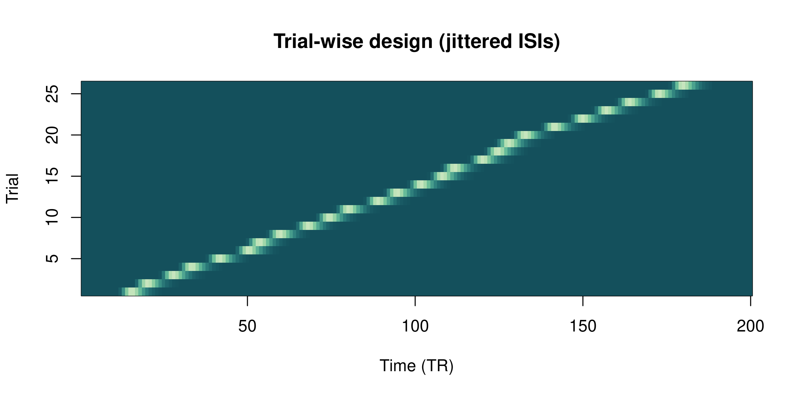
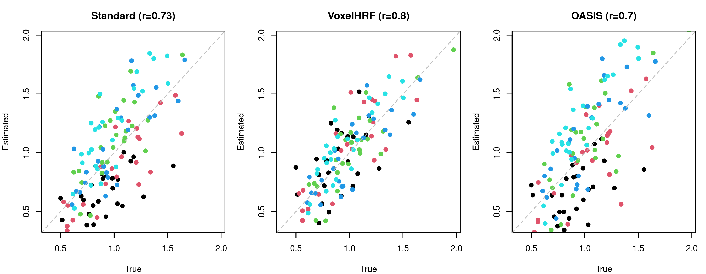

Why HRF Variability Matters
Vascular properties, neurovascular coupling, and acquisition protocols all influence the hemodynamic response. Relying on a single canonical HRF shape can bias trial-wise estimates, especially across brain regions or clinical populations.
This vignette shows how to estimate voxel-specific HRFs and
incorporate them into LSS. You should be familiar with the core LSS
workflow (vignette("fmrilss")) and fmrihrf
basics.
Alternative approach: For a library-constrained
method that is usually faster and more stable, see
vignette("sbhm").
Simulate Data with Variable HRFs
Experiment parameters
You need a sampling frame, jittered onsets, and a small set of voxels whose HRFs differ.
n_time <- 200
n_vox <- 5
TR <- 1.0
sframe <- fmrihrf::sampling_frame(blocklens = n_time, TR = TR)
grid <- fmrihrf::samples(sframe, global = TRUE)Voxel-specific HRFs
Each voxel gets a slightly shifted and scaled version of the canonical HRF. This mimics spatial variation in vascular properties.
We create each voxel’s HRF by wrapping the canonical shape with a peak shift and width scaling.
Generate signal and noise
For each voxel, you convolve the trial onsets with that voxel’s HRF, scale by true betas, then add AR(1) noise.
Y <- matrix(0, n_time, n_vox)
for (v in 1:n_vox) {
rset <- fmrihrf::regressor_set(
onsets = onsets, fac = factor(seq_len(n_trials)),
hrf = voxel_hrfs[[v]], duration = 0, span = 30, summate = FALSE
)
Xv <- fmrihrf::evaluate(rset, grid = grid, precision = 0.1, method = "conv")
Y[, v] <- as.matrix(Xv) %*% true_betas[, v]
}
noise_sd <- 0.5; ar_coef <- 0.3
for (v in 1:n_vox) {
e <- rnorm(n_time, sd = noise_sd)
noise <- as.numeric(stats::filter(e, filter = ar_coef, method = "recursive"))
Y[, v] <- Y[, v] + noise
}
colnames(Y) <- paste0("V", 1:n_vox)Visualise the design
rset_vis <- fmrihrf::regressor_set(
onsets = onsets, fac = factor(seq_len(n_trials)),
hrf = HRF_SPMG1, duration = 0, span = 30, summate = FALSE)
X_vis <- as.matrix(fmrihrf::evaluate(rset_vis, grid = grid, precision = 0.1, method = "conv"))
image(seq_len(nrow(X_vis)), seq_len(ncol(X_vis)), X_vis,
col = hcl.colors(64, "BluGrn"), xlab = "Time (TR)", ylab = "Trial",
main = "Trial-wise design (jittered ISIs)")
Standard LSS with Canonical HRF
Standard LSS assumes every voxel shares the same canonical HRF. When that assumption is wrong, you get biased betas.
Estimate Voxel-Specific HRFs
Multi-basis GLM
The SPMG3 basis set includes the canonical HRF plus its temporal and dispersion derivatives. Fitting a GLM with this basis set lets you estimate how each voxel’s HRF deviates from canonical.
rset_mb <- fmrihrf::regressor_set(
onsets = onsets, fac = factor(rep(1, n_trials)),
hrf = HRF_SPMG3, duration = 0, span = 30, summate = TRUE)
X_mb <- as.matrix(fmrihrf::evaluate(rset_mb, grid = grid, precision = 0.1, method = "conv"))
hrf_weights <- sapply(1:n_vox, function(v) coef(lm(Y[, v] ~ X_mb - 1)))
cat("Basis weights (3 x", n_vox, "voxels):\n")
#> Basis weights (3 x 5 voxels):
print(round(hrf_weights, 2))
#> [,1] [,2] [,3] [,4] [,5]
#> X_mb1 0.74 0.85 1.04 1.16 1.17
#> X_mb2 0.46 0.49 0.32 -0.46 -0.81
#> X_mb3 0.14 0.23 -0.31 0.24 0.30The first row captures the canonical amplitude; rows 2–3 capture latency and width shifts.
Apply Voxel-Specific HRFs in LSS
With basis weights in hand, you can build a voxel-specific design by weighting the three basis columns for each trial. Notice that this is a per-voxel loop: each voxel gets its own tailored design matrix.
voxel_betas <- matrix(NA, n_trials, n_vox)For each voxel, build a tailored design matrix by weighting the three basis columns with that voxel’s estimated HRF coefficients, then run LSS.
for (v in 1:n_vox) {
Xv <- X_can * 0
for (tr in 1:n_trials) {
rset_tr <- fmrihrf::regressor_set(onsets = onsets[tr], fac = factor(1),
hrf = HRF_SPMG3, duration = 0, span = 30, summate = FALSE)
cols <- as.matrix(fmrihrf::evaluate(rset_tr, grid = grid, precision = 0.1, method = "conv"))
Xv[, tr] <- cols %*% hrf_weights[, v]
}
voxel_betas[, v] <- lss(Y[, v, drop = FALSE], Xv, method = "r_optimized")
}For production analyses, lss_with_hrf() wraps this loop
with optional C++ acceleration. See ?lss_with_hrf.
OASIS Alternative
OASIS handles multi-basis HRFs and LSS in a single call. You pass
HRF_SPMG3 and it solves for all basis components
simultaneously, with optional ridge regularization for stability.
oasis_betas <- lss(
Y, X = NULL, method = "oasis",
oasis = list(
design_spec = list(
sframe = sframe,
cond = list(onsets = onsets, hrf = HRF_SPMG3, span = 30)
),
ridge_mode = "fractional", ridge_x = 0.01, ridge_b = 0.01
)
)
oasis_canonical <- oasis_betas[seq(1, nrow(oasis_betas), by = 3), ]See vignette("oasis_method") for ridge tuning and
standard-error computation.
Compare Methods
Compute accuracy metrics
cors <- c(Standard = cor(as.vector(standard_betas), as.vector(true_betas)),
VoxelHRF = cor(as.vector(voxel_betas), as.vector(true_betas)),
OASIS = cor(as.vector(oasis_canonical), as.vector(true_betas)))
rmses <- c(Standard = sqrt(mean((standard_betas - true_betas)^2)),
VoxelHRF = sqrt(mean((voxel_betas - true_betas)^2)),
OASIS = sqrt(mean((oasis_canonical - true_betas)^2)))
comparison_summary <- data.frame(
Correlation = round(cors, 3),
RMSE = round(rmses, 3)
)
comparison_summary
#> Correlation RMSE
#> Standard 0.733 0.279
#> VoxelHRF 0.802 0.214
#> OASIS 0.697 0.322These metrics give you a direct accuracy check on the simulated data rather than relying on a visual impression alone.
Scatter plots
Points closer to the diagonal mean better recovery.
Each panel shows estimated versus true betas; colour distinguishes voxels.
par(mfrow = c(1, 3), mar = c(4, 4, 3, 1))
for (i in seq_along(cors)) {
est <- list(standard_betas, voxel_betas, oasis_canonical)[[i]]
plot(true_betas, est, pch = 19, col = cls, xlim = rng, ylim = rng,
xlab = "True", ylab = "Estimated",
main = paste0(names(cors)[i], " (r=", round(cors[i], 2), ")"))
abline(0, 1, lty = 2, col = "gray")
}
Next Steps
When to use voxel-wise HRFs. You should consider this approach when regions differ in vascular architecture (motor vs. visual cortex), when studying populations with altered neurovascular coupling (aging, clinical), or when high-resolution acquisitions expose laminar-level variation.
Choosing a method. Standard LSS with a canonical HRF is sufficient for homogeneous responses. Voxel-wise HRF LSS improves accuracy when HRF heterogeneity is expected. OASIS is preferred for rapid-event designs or when you want a single-step solve with HRF flexibility and ridge control.
Further reading:
-
vignette("fmrilss")– LSS basics -
vignette("oasis_method")– OASIS solver with ridge, multi-basis HRFs, and standard errors -
vignette("sbhm")– Shared-Basis HRF Matching for efficient voxel-specific HRFs -
?estimate_voxel_hrfand?lss_with_hrf– production-ready voxel-wise HRF workflow